Problem Definition
In this assignment, it is required to design and implement algorithms that recognize at least three hand shapes in a video stream
Experiments
In this assignment, we implement algorithms to recognize hand gestures in video stream. The following are the hand shapes that our algorithm can recognize:
| Paper | Rock | Up | Scissor |
| 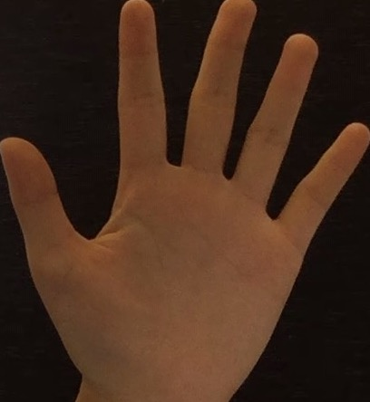 | 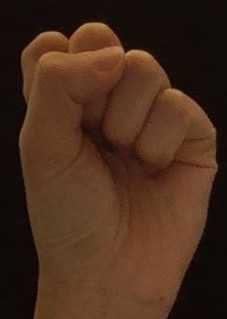 | 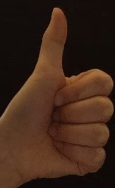 | 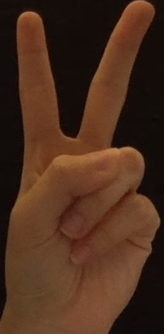 |
Results
List your experimental results. Provide examples of input images and output images. If relevant, you may provide images showing any intermediate steps. If your work involves videos, do not submit the videos but only links to them.
Result |
||
 |
 |
 |
Discussion
Discuss your method and results:
- Details about the pre-processing, recognition, and post-processing steps implemented in your system.
Pre-processing:
After we generate the template, we need to preprocess each frame with a hand shape. The process will be similar with the steps above. First, we use the same skin-detect algorithm to extract the hand shape, remove noise by thresholding and blurred for a more generic hand shape. Then we convert it to grayscale (in our skin-detect algorithm, we use GaussianBlur to convert the image to only contains white and black color to achieve a more general result. Finally, we rescale the image into a smaller image to both blur it and make the size smaller for running the algorithm in a faster speed (efficiency).
Recognition(Template Matching):
We put all the templates in an array. Then we use the built-in method matchTemplate to compare each template and the source image by sliding the template and find similar targets on the source image. For templateMatching, we use SQDIFF-NORMED so we need to find the min_val. We compare the min_val we got from the each template and find the smallest min_val. This corresponding template will be the gesture that has been recoginized.
Post-Processing:
For each frame with a hand shape, after we finished template Matching, we use getContour method to draw the general contour for the hand shape and post text on the screen to show which hand gesture it is. We also draw the centroid of the hand contour and post its position on the screen.
- Statistics of detection results, including a confusion matrix, and precision, recall, and F-1 scores.
Confusion matrix:
| 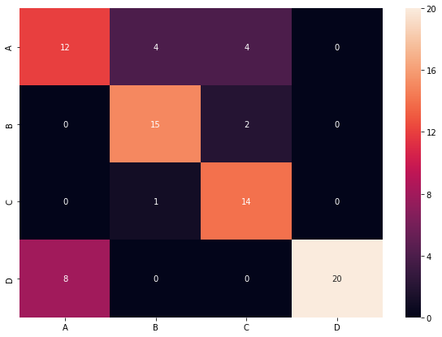 | 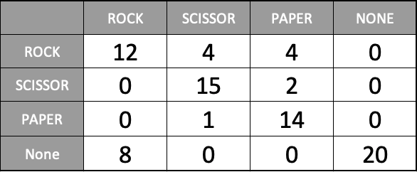 |
Precision:
precisionrock = 12/(12 + 4 + 4 + 0) = 3/5 = 0.6
precisionscissor = 15/(15 + 2 + 0 + 0) = 15/17 = 0.882
precisionpaper = 14/(14 + 1 + 0 + 0) = 14/15 = 0.933
precisionnone = 20/(20 + 0 + 0 + 8) = 5/7 = 0.714
precisiongeneral = (0.6 + 0.882 + 0.933 + 0.714)/4 = 0.782
Recall:
recallrock = 12/(12 + 0 + 0 + 8) = 3/5 = 0.6
recallscissor = 15/(15 + 4 + 1 + 0) = 3/4 = 0.75
recallpaper = 14/(14 + 4 + 2 + 0) = 7/10 = 0.7
recallnone = 20/(20 + 0 + 0 + 0) = 20/20 = 1
recallgeneral = (0.6 + 0.75 + 0.7 + 1)/4 = 0.763
F-1 scores:
F1 = 2 * (0.782 * 0.763)/(0.782 + 0.763) = 0.772
- Two graphical displays, one success and one failure, for each type of gestures detection. In addition, a brief explanation should be attached to each pair of images.
- Other methods
| Success RGB | Success BW | Failure RGB | Failure BW |
| 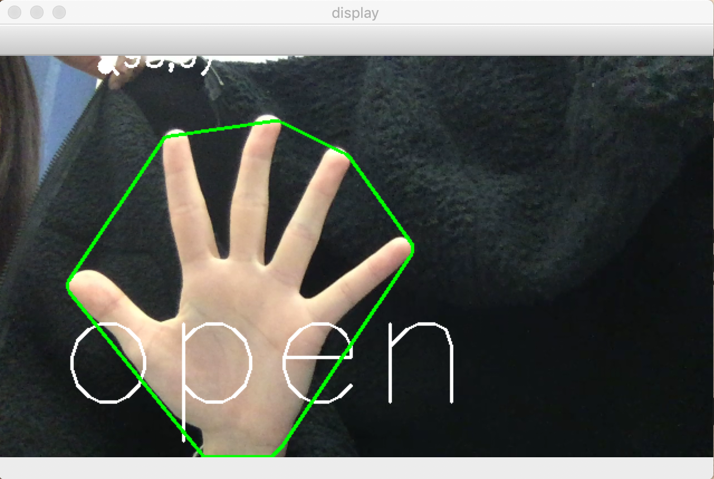 | 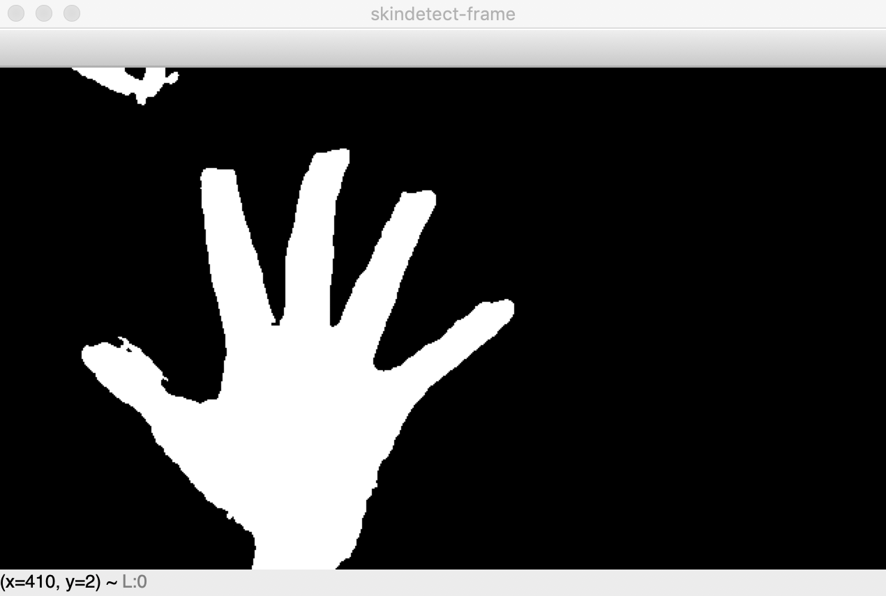 | 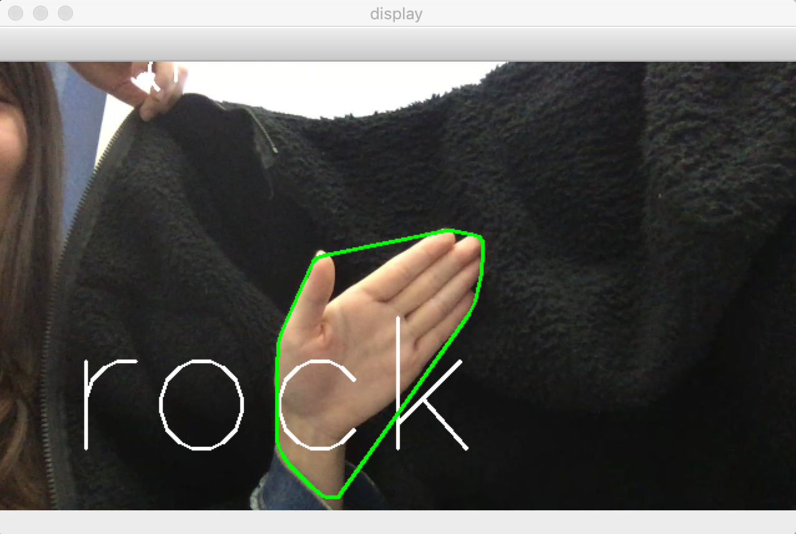 | 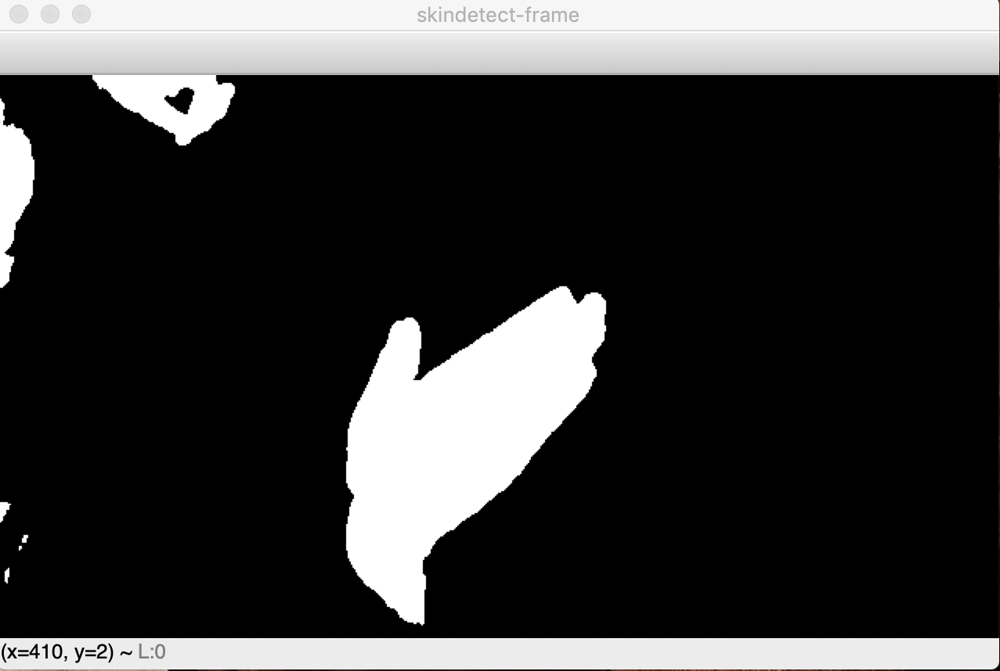 |
| Success RGB | Success BW | Failure RGB | Failure BW |
| 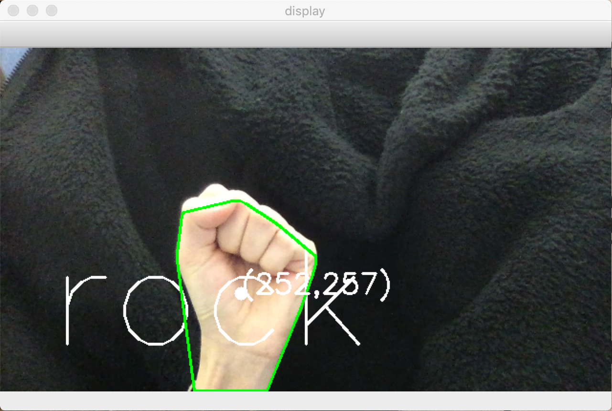 | 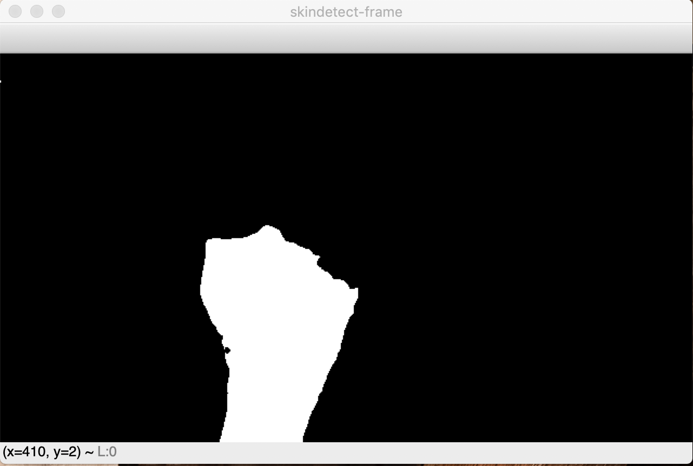 | 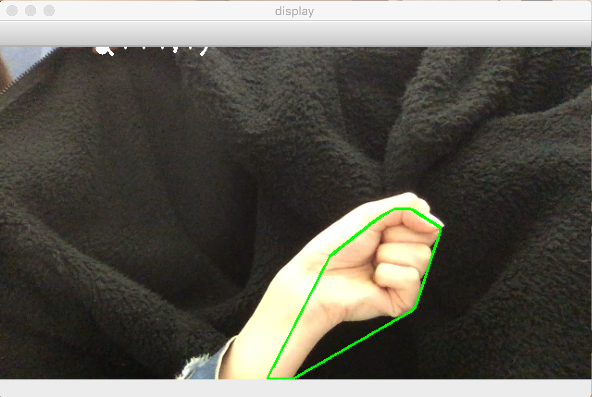 | 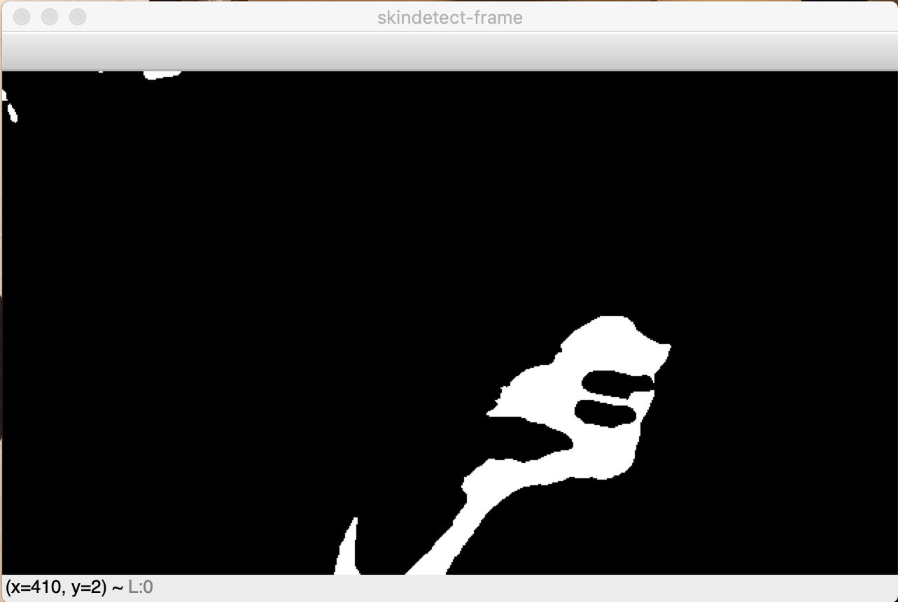 |
| Success RGB | Success BW | Failure RGB | Failure BW |
| 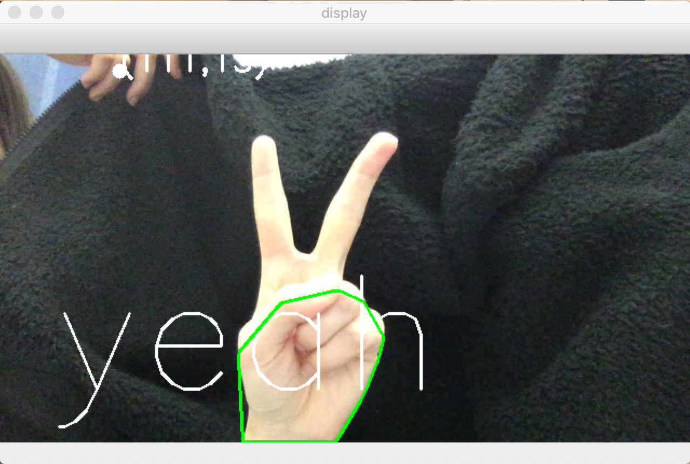 | 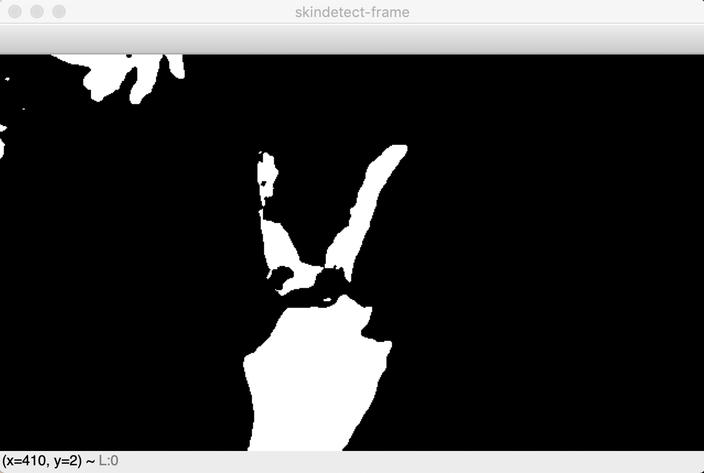 | 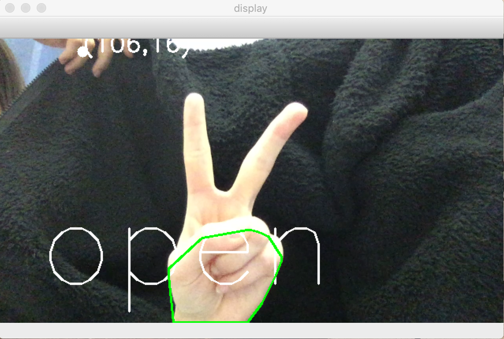 | 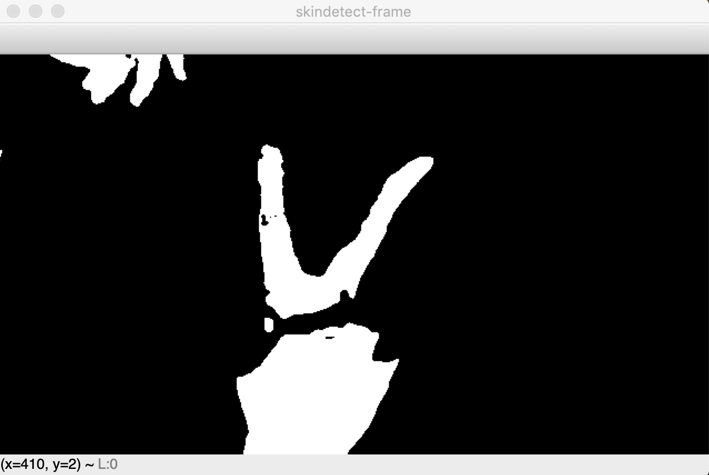 |
The graph shows two contrast detection of hand shape. The system failed to detect the shape of palm because the graph clearly tells that the failure shape of hand actually have occupied the similar shape of pixels in each frame. A very import factor that may affect the accuracy of detecting system is the gesture in front of the camera. The closed palm is easily identified as rock. There is no need to explain the successful detection of palm shape which in this case the text "open" indicated in the graph.
Template Generation:
First, we need to generate templates for the hand shapes that we are going to recognize later. We first use the skin-detect algorithm that we implement to extract the hand shape in each image by only using the area inside the largest contour. Then we removed noise by thresholding and blurred for a more generic hand shape. Finally, we converted to the hand image to grayscale.
Frame-to-Frame Difference and Motion Energy Templates:
In this assignment, we also implement frame-to-frame difference to show the motion energy. For frame-to-frame difference, we have the current frame and the last frame, we calculate the difference of the same pixels on two frames. If there is a difference, then we recognize it as in motion and convert it to white. Or we will recognize it as part of the background and convert it to black. For Motion Energy, we have a sliding window of size 3 which means that we will detect and present the motion in the latest 3 frames. In order to achieve that, we first initialize a queue with three black images. While the camera is on, we keep adding new frame into the queue and pop up old frame out of the queue. During this process, we use a for loop to iterate each frame in the queue to compare the difference of the pixels. If we recognize the pixel is “in motion”, then we convert it to white. If the pixels is not moved in the three frame, we will convert it to black.
Additional Interesting Usage
By connecting the weChat API, the program can have the ability to send message from the OS to weChat APP. It requires an additional single-board computer raspberry pi to play the role of camera. Once it detects someone is waving his hand, then it will call the weChat API and send message to the person who own it. It should looks like this:
| 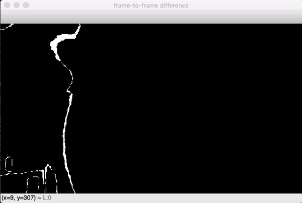 |  |
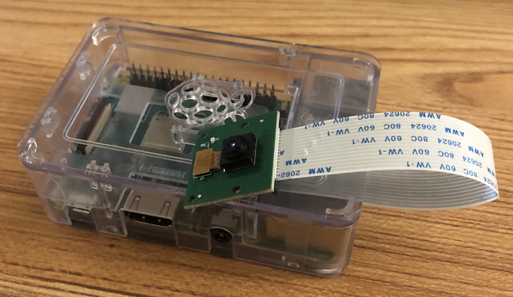 |
Conclusions
In general, the Computation Vision detecting system can have a fair acceptable experiment results.
Credits and Bibliography
[1] Heintz, Brenner. “Training a Neural Network to Detect Gestures with OpenCV in Python.” Towards Data Science, Towards Data Science, 17 Dec. 2018, towardsdatascience.com/training-a-neural-network-to-detect-gestures-with-opencv-in-python-e09b0a12bdf1.
[2] “Basic Motion Detection and Tracking with Python and OpenCV.” PyImageSearch, 5 Feb. 2019, www.pyimagesearch.com/2015/05/25/basic-motion-detection-and-tracking-with-python-and-opencv/.
[3] “Template Matching” Template Matching - OpenCV 2.4.13.7 Documentation, docs.opencv.org/2.4.13.7/doc/tutorials/imgproc/histograms/template_matching/template_matching.html.